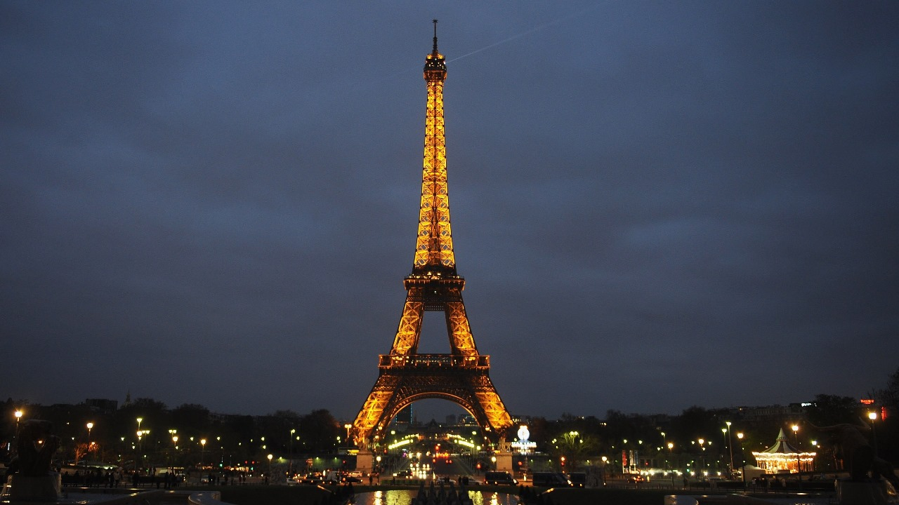

Henry | 2min read | 12-10-2023

The Eiffel Tower, an architectural masterpiece, graces the Parisian skyline as an enduring symbol of France's artistic and engineering prowess. Designed by Gustave Eiffel for the 1889 Exposition Universelle, its intricate iron lattice structure and soaring height have captivated visitors from around the world for over a century, making it a cultural treasure of global renown.
The Parisian Icon: A Historical Marvel
The Eiffel Tower, known as "La Tour Eiffel" in French, stands as an enduring symbol of France and a testament to the ingenuity of 19th-century iron engineering. Erected in the heart of Paris, this iconic landmark has captured the imagination of millions of visitors from around the world for over a century.
Gustave Eiffel's Vision
Designed by the brilliant engineer Gustave Eiffel, the tower was constructed as the centerpiece of the 1889 Exposition Universelle, a world's fair celebrating the 100th anniversary of the French Revolution. Gustave Eiffel's design was selected from a pool of over 100 submissions, and construction began in 1887. At a height of 324 meters (1,063 feet), it was the tallest man-made structure in the world at the time.
Structural Wonders
The tower's intricate lattice structure, comprising 18,038 individual iron pieces and 2.5 million rivets, is a marvel of precision engineering. It was designed to withstand the elements, making it remarkably resilient to wind and weather. The Eiffel Tower boasts three observation decks, each offering breathtaking views of the City of Light. The first level, at 57 meters (187 feet), is home to restaurants and an immersive glass floor. The second level, at 115 meters (377 feet), features an array of shops, dining options, and even a museum showcasing the tower's history. The third and highest level, at 276 meters (906 feet), provides panoramic views that stretch for miles.
Enduring Legacy
The Eiffel Tower's significance extends beyond its architectural brilliance. It has played a role in scientific experiments, served as a radio transmission tower, and even inspired countless works of art. Today, it remains one of the most visited landmarks globally and a cherished symbol of France's cultural heritage. In conclusion, the Eiffel Tower is not just a magnificent landmark but a testament to human engineering and creativity. Its enduring allure and historical significance make it a must-visit destination for travelers seeking a deeper connection with the heart of France and the heights of human achievement.